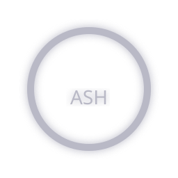

Meaning
Loss / decay / exhaustion (Scar / Hearts)
Variants
Switch between canonical + theme variants when provided.
Active: Canonical
Used In
- OneShot / MultiShot
- Archive logs (exhaustion)
Glyphs do not imply profit, direction, permission, or advantage. Sentinel governs execution.